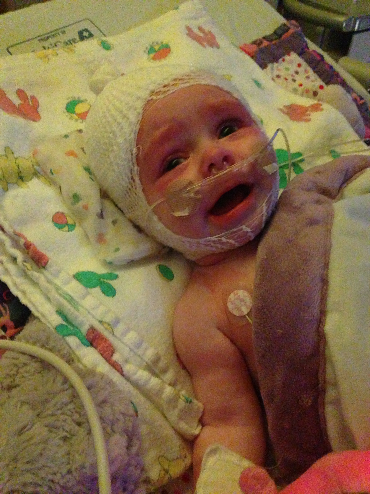
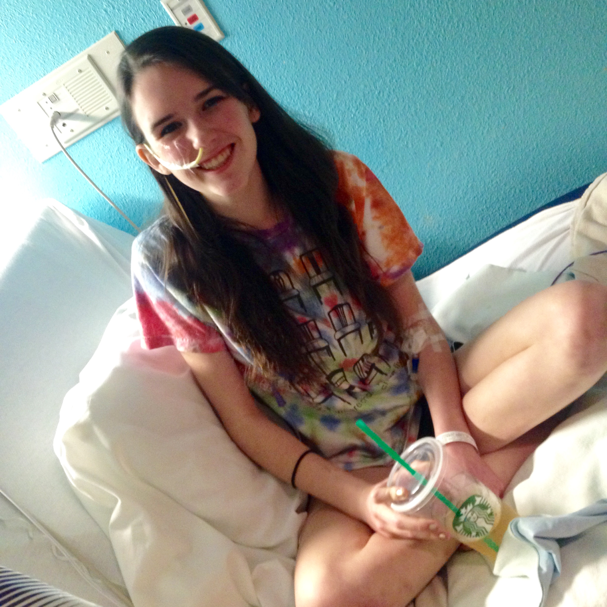

Why we have our focus
When your child has cancer, everyone in the hospital becomes family. Security guards, janitors, and ER nurses recognize you just because of how frequently you visit the hospital. The hematology/oncology floor is a tight knit community, but they're not the only ones who know the hospital inside out. There are thousands of children living with life altering or life threatening chronic conditions, with little to no known treatments. Just like pediatric cancer patients, these kids miss out on their childhood and can die entirely too early due to dangerous treatments and lack of funding. Some chronic illnesses are treated with chemo, and some are more deadly than many types of cancer. Chronic illness needs awareness too.. So why is The Golden Truth focused entirely on pediatric oncology?
The biggest problem with childhood cancer awareness is its content. Yes, there is a lack of awareness as lots of people don't realize kids get cancer, but the majority of people know childhood cancer exists. There are St. Jude ads on TV, and Make A Wish pictures on the subway. But the way pediatric oncology exists in the media is far from the truth. Our culture's perception of childhood cancer is filled with adorable bald children and their favorite celebrities. This sugarcoat is a huge problem, because what part of the picture on the right screams "We need a cure NOW"?! This is a real picture of a real child, but it is a such a tiny portion of their life. For every picture like that, there are 10 pictures  of needle pokes, puke buckets, radiation burns, and ventilators. The first picture is included in awareness to provide hope, but the picture on the left is necessary to create much needed change. And that change starts with awareness. We all know the first picture, but the other 10 need to be disclosed. It's a balancing act, and awareness campaigns like ours need to work hard to show the full picture.
On the other hand, chronic illness has virtually no awareness. Unless you or someone you know has gastroparesis, autoimmune autonomic ganglionopathy, progeria, mitochondrial disease, or trigeminal neuralgia- you've probably never heard of these conditions. They are dehabilitating, deadly- and just a few of THOUSANDS of conditions affecting children. Everyone knows what cancer is and acknowledges it as a serious illness. But awareness for some of these conditions are so nonexistant that it takes months- even YEARS to get a proper diagnosis, due to a physician's lack of knowledge and belief in a patients symptoms. To make matters worse, many are "invisible illnesses", meaning that a patient can look totally fine as their organs fail them, adding to the ignorance of the general public. (Yes, there are some cancer patients who look fine, but this is generally speaking) The Golden Truth is focused on CHANGING the way the world sees childhood cancer, stripping away the sugarcoat created by the media, and showing the world why our kids deserve more funding and better treatments. Awareness campaigns for chronic illnesses have to PROVE their illness to the world, before they can even think about promoting funding and treatments.
So if awareness for these complex chronic conditions is so rare, and so different than childhood cancer, why do I know so much about them as the producer of The Golden Truth?
Over the past few years, I have been struggling with several of these "invisible illnesses". Like most of the thousands of chronic illness patients I mentioned above, it took years for me to get a proper diagnosis, and even my specialists aren't completely sure what to do with my health. Unlike a cancer patient, there's no "treatment protocol" for me, it's a lot of trial and error. To name a few, I have Gastroparesis1 , Colonic Intertia2 , Dysautonomia3 , and Chronic Migraines4 . Some of my other diagnosises are still up in the air, making treatment even harder. For example, my extremely hypermobile (easily dislocated) joints could be simply Joint Hypermobility Syndrome, or a genetic connective tissue disorder called Elhers-Danlos Syndrome Type 3. Many of my doctors think that all of my conditions are connected by one big genetic condition, we're just not sure what. Figuring that out will take months or years, but it would help us find better treatments and prevent further progression of my disesases.
1- Gastroparesis is exactly what it sounds like, a paralyzed stomach. This makes it extremely difficult for my body to eat and digest food. When I eat, food that usually stays in your stomach for an hour stays in mine all day. After the food has been sitting in my stomach (undigested) for hours, it looses a lot of its nutrients, making it very hard to fuel my body. Not to mention I feel full/nauseous after a few bites.
2- Colonic Inertia is a motility problem affecting my large intestine, slowing down food as it moves through my colon. This has lead to further complications, such as the painful elongating/twisting of my intestines.
3- Dysautonomia is the malfunction of the autonomic nervous system. Your autonomic nervous system regulates your heart rate, blood pressure, breathing, etc. (Things that a healthy body doesn't have to think about) My particular form of dysautonomia is Postural Orthostatic Tachycardia Syndrome, or POTS. This makes it hard for me to stand, because while upright my heart can't pump blood from the bottom of my body to the top.
4- Migraines are basically a headache on steroids. Chronic migraines mean that I get migraines pretty frequently. For me, we're not exactly sure what triggers them, or why I started getting them.
It took me from 2012-2015 to get partially diagnosed, giving my syndromes ample time to progress. Treatment has taken even longer to figure out. Currently I go to an infusion center twice a week for IV hydration because my body can't get the amount of fluids needed to regulate dysautonomia myself, I take a ton of medications (every 3 hours), and I'm about to test out a gastric stimulator to regulate my digestive system for me. I have a feeding tube to deliver nutrition into my intestines and past my slow moving stomach, and I've tried countless "game-changing" medications. Because there are so many factors that go into treating my "complex case", we never truly know what is going to work. If a drug works great on my stomach, but messes with my heart rate, we have no choice but to stop it. The entire process is hit-or-miss, and my care team will admit when they don't know any more than I do about a particular regimen.
I won't lie, being sick is horrible. I am almost always not feeling well, I miss out on a lot of things, and the hospital isn't the greatest teenage hangout. But I refuse to let my illness define me, nor my work. I was extremely hesitant to make this post, because I do not want the integrity and quality of our film to be compared to my condition. Although The Golden Truth may take more time than I anticipated, it will get done. Being sick hasn't made me incapable- it's actually rewarding at times! I'm able to use my own experience as a patient to relate to the kids I work with. There's been several instances that I've been in the right place at the right time to reccomend a specialist or explain a procedure. Families can always ask me to bring them a meal, but I also get called up to do some physical therapy! I'm all for using my setbacks as advantages.
Maybe one of my future documentaries will be about invisible illness. Right now, I am focused on childhood cancer. That is not to say that the chronic illness community is any less deserving. (Trust me, I know first hand that "spoonies" fight hard.) It is just a different issue, and I would be doing both communities a disservice by combining them. The bottom line is, it's awful to spend your childhood in a hospital. It's awful to spend any part of your life in a hospital. It's awful to be targeted by racism, not have access to clean water, be stuck in the foster system, and so much more. There are a million awful problems that need awareness and positive social change. I will get to as many as I can in my lifetime; but my lifetime will only go so far.
If you're reading this, then you have access to the most powerful tool in our culture right now (the internet). Your computer/smartphone has potential to create something that could be the social change for a cause you care about. So don't use it for cat videos... at least not all of the time.